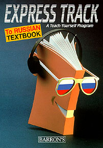

Page index / publications
Express Track

Express Track to Russian: Textbook, Workbook, Learner's Handbook, Answer Booklet, four cassettes.A teach yourself program translated from the German and adapted for speakers
of English from MOCT 1.
(Barron's: 1995)
ISBN 0-87120-8242-7
A serious course of study for the individual language learner. The unique learner's handbook leads you step by step through the process of picking up the language on your own.